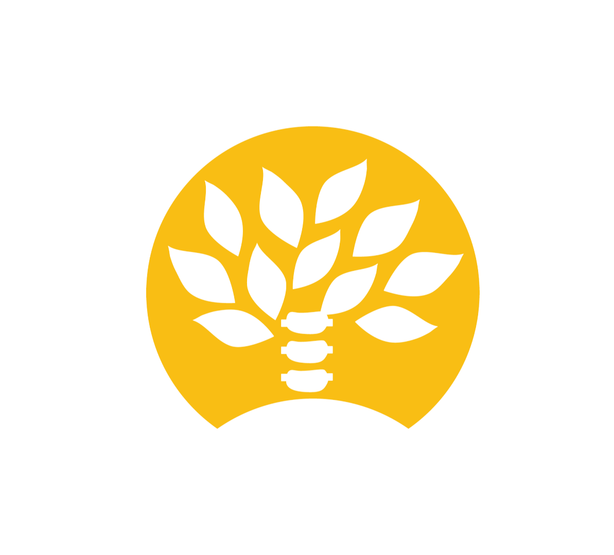
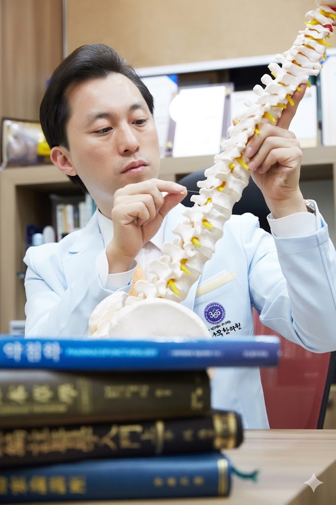
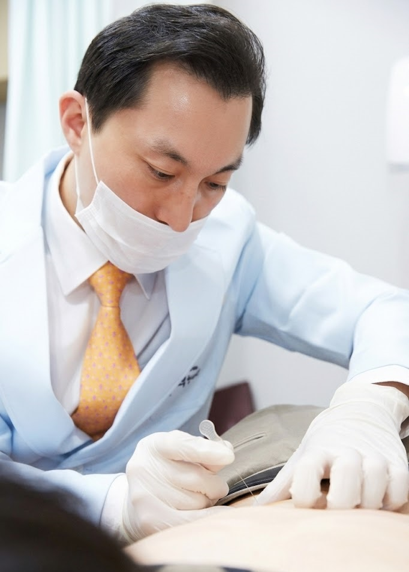
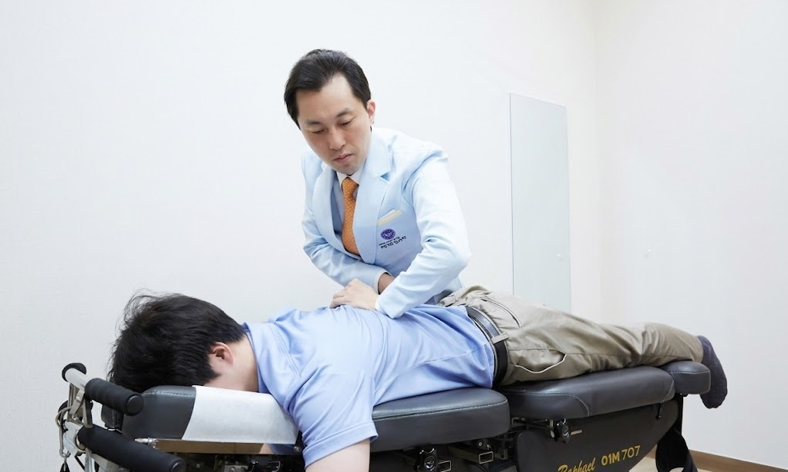
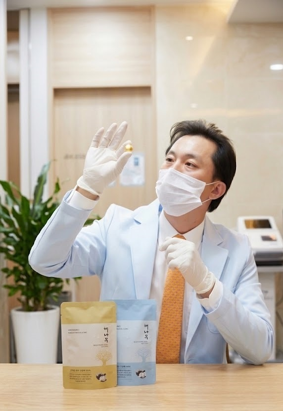

해나무한의원 동탄동탄 같은 자리에서 10년째
추나와 약침으로 치료 하고 있습니다.
평일 매일 야간진료, 주말 및 공휴일 진료
| 월 | 화 | 수 | 목 | 금 | 토 | 일 |
|---|---|---|---|---|---|---|
| 김성수 | 박세운 | 김성수 최영재 |
최영재 | 김성수 | 김성수 | 최영재 |
해나무한의원은 진통제와 스테로이드제를 사용하지 않습니다.
환자분들이 겪고 있는 불편함의 뿌리가 어디서부터 시작되었는지, 원인과 생활 습관까지 깊이 들여다 봅니다.
따뜻한 소통과 정직한 진료를 바탕으로, 자연스러운 회복의 힘을 극대화하도록 노력하고 있습니다.
"환자분의 아픔에 공감하며, 가장 안전하고 바른 길로 치료를 돕겠습니다. 통증 치료부터 맞춤형 녹용 보약까지 믿고 맡길 수 있는 든든한 주치의가 되겠습니다."
"세심한 진단과 따뜻한 진료로 환자분의 지친 몸과 마음을 치유합니다. 오직 한 분 한 분의 체질에 맞춘 정교한 치료를 약속드립니다."
"대학병원 에서 진료 경험을 바탕으로 여성질환, 보약, 꽃길 다이어트 까지 일상의 빠른 회복을 책임지겠습니다."
해나무한의원은 진통제와 스테로이드를 사용하지 않습니다.
교통사고 후 발생하는 신체적, 정신적 문제를 추나요법으로 치료합니다.
디스크, 협착증, 일자목, 거북목, 좌골신경통, 이상근증후군 같은 목과 허리 질환을 치료합니다.
회전근개손상, 석회성건염, 충돌증후군, 오십견 등 어깨 질환을 치료합니다.
퇴행성관절염, 연골 손상 등 무릎 질환을 치료합니다.
건초염, 방아쇠손가락, 손목터널증후군, 손목삐끗 을 치료합니다.
발목삐끗, 족저근막염, 아킬레스건염, 비복근파열(테니스레그) 등을 치료합니다.
골프, 배드민턴, 탁구, 댄스, 러닝, 마라톤 등 스포츠 활동 후 발생하는 스포츠 손상을 치료합니다.
기능성 소화불량, 만성 위염, 역류성 식도염 등 각종 소화기관 증상을 치료합니다.
경추성두통, 신경성두통 및 어지럼증과 이명 문제를 치료합니다.
맥진과 설진을 통하여 환자의 체질을 고려한 최적의 맞춤형 녹용 보약을 처방합니다.
황제에게 진상되었던 최고의 보약으로, 유명인들도 가장 많이 찾는 공진단을 처방합니다.
특허받은 꽃길 다이어트로 굶지않는 방법으로 미용이 아닌 건강함을 만들겠습니다.
해나무한의원은 진통제로 일시적인 통증 억제가 아닌, 몸의 균형을 바로잡고 통증의 근본 원인을 해결하는 것에 집중합니다.
수술 없이 안전한 보존 치료인 약침과 추나 그리고 한약을 통해 일상으로 빠르고 편안하게 복귀하실 수 있도록 최선을 다해 돕겠습니다.
예약하기
순수 한약재에서 추출하고 정제한 성분을 경혈에 직접 주입하여, 침의 효과와 한약의 효과를 동시에 얻을 수 있습니다.
만성적인 통증부터 급성 통증까지, 초음파를 통해 정확한 부위를 확인하여 치료하므로 안전하고 빠른 통증 완화 효과를 자랑합니다.
예약하기
자생한방병원 출신의 의료진이 직접 손을 이용하여 틀어진 척추와 관절, 뭉친 근육을 밀고 당겨 바르게 교정합니다.
거북목, 수험생 통증, 골반 틀어짐 등으로 인한 구조적 원인을 해결하여 만성 통증의 재발을 방지합니다.
예약하기
좋아진 부위가 쉽게 재발되는 이유는 바로 면역력 저하 입니다. 감기가 재발하듯 , 통증도 재발하기가 쉽습니다. 원장님의 세밀한 진맥과 설진을 바탕으로 오직 환자 한 분만을 위한 약을 처방합니다.
식약처(KFDA)의 엄격한 품질 검사를 통과한 청정 한약재만을 고집하여 남녀노소 누구나 안심하고 복용하실 수 있습니다.
예약하기
운동이나 식단 변경 없이, 기초 대사량을 높여 '가만히 있어도 운동하는 상태'를 만들어 체지방 분해를 촉진합니다.
식단변경없이 식이조절과 꽃길환을 통해, 요요 없는 건강한 감량을 시작하세요.
비대면 상담하기일요일과 공휴일도 진료하는 해나무 한의원
| 구분 | 진료 시간 | 점심 시간 |
|---|---|---|
| 평일 (월~금) | 09:30 - 20:00 | 13:00 - 14:00 |
| 토요일 | 09:30 - 16:00 | 13:00 - 14:00 |
| 일요일 및 공휴일 | 09:30 - 15:00 | 점심시간 없이 진료 |
내원하시는 모든 환자분들께 치료시간만큼 무료 주차를 지원해 드립니다. 진료를 마치시고 데스크에 차량 번호를 말씀해 주세요.
건물 뒷길 공영 주차장을 이용해 주시면 1시간 30분 무료주차가 가능합니다.